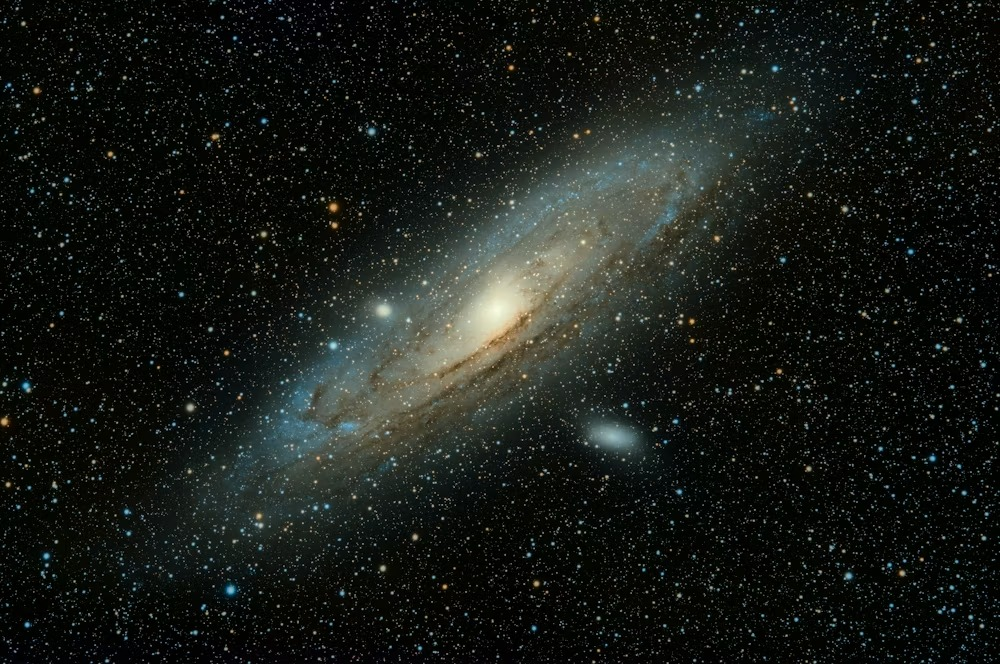
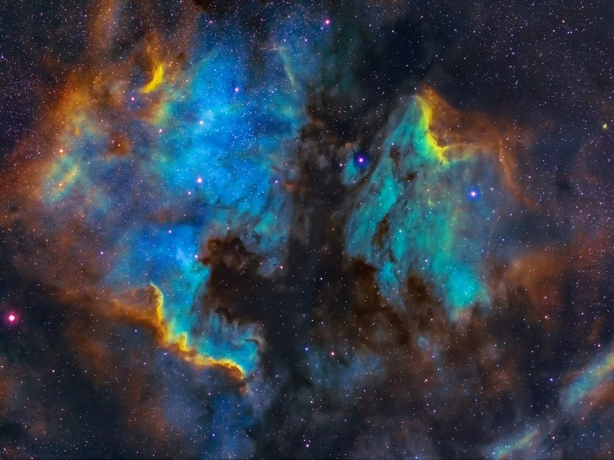
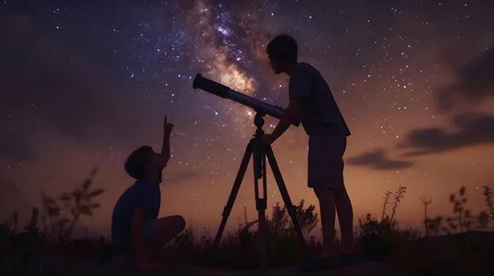
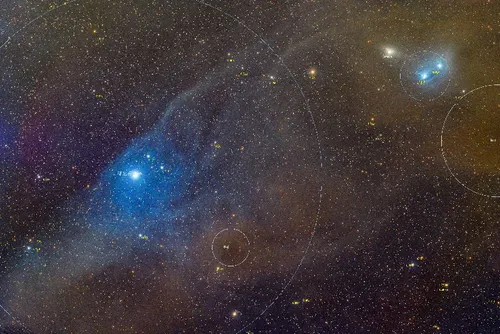

Explore the Universe Together.
A community dedicated to observation, learning, and discovery.
0
0
0
0
About Stella
We are a passionate community of stargazers, astronomers, and cosmic adventurers. Our mission is to make the wonders of the universe accessible to everyone, from absolute beginners to seasoned astrophotographers.
Through shared observation nights, workshops, and expeditions, we foster a deep connection with the cosmos and with each other.
Read Our Story
Why Join Stella?
Pro Equipment Access
Gain direct access to our 14-inch observatory telescope and high-end astrophotography rigs.
Expert Mentorship
Learn from seasoned astronomers who can guide you from your first spotting scope to deep sky imaging.
Dark Sky Trips
Join exclusive expeditions to Bortle 1 & 2 dark sky sites for unparalleled views of the Milky Way.
Featured Event
Deep Sky Marathon 2026
Join us for our annual all-night observation challenge. We'll be targeting the Messier catalogue objects visible this season with our new 16-inch Dobsonian.
Learn Astronomy
Beginner’s Guide to Stargazing
Start here. Understanding the night sky without a telescope.
Learn MoreCommunity Captures



Latest from the Cosmos
View All NewsCapturing The Carina Nebula in Narrowband
A comprehensive technical guide to long-exposure imaging using H-Alpha and OIII filters.
Read Guide
The Red Planet's Frontiers: New Findings
Latest imaging from the Valles Marineris region reveals unexpected seismic activity.
Read Full Story"Stellar gave me the tools and the community to finally understand what I was looking at. It changed the way I see the night sky forever."
Frequently Asked Questions
Do I need my own telescope to join?
Not at all! One of the biggest benefits of membership is access to our club equipment. We have several telescopes available for members to use at our observation nights.
Are events suitable for children?
Yes! We host specific family-friendly observation nights. However, some of our deep-sky photography workshops are better suited for adults and teenagers.
Where is the dark sky site located?
Our private observation site is located about 2 hours from the city center, away from light pollution. The exact location is shared with members upon registration.
Join Our Next Observation Night
Don't miss out on clear skies and great company. Become a member today and start your journey.
Become a Member